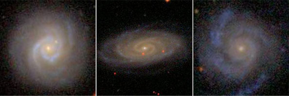

Reader, Lancaster University
I am currently a Reader in Physics at Lancaster University. Prior to coming to Lancaster I was an Einstein Fellow at UC San Diego's Center for Astrophysics and Space Sciences and the Henry Skynner Junior Research Fellow in Astrophysics at Balliol College, Oxford, having earned my PhD from Yale working with Meg Urry.
I am also the Deputy PI for Galaxy Zoo and Principal Investigator of Galaxy Zoo Bar Lengths and The Planetary Response Network. As part of the Zooniverse team and the founder of the Zooniverse Analysis and Zooniverse Transient Groups, I have helped design, run, and produce science from citizen science projects, and have done research into the practice of crowdsourcing and its use in change detection and human-machine classification.
My astrophysical research focuses on galaxy evolution, including the merger-free (sometimes called "secular") growth of galaxies and quenching of star-formation processes, and the co-evolution of supermassive black holes with their host galaxies. I make extensive use of multi-wavelength imaging and spectroscopic data, including from the Hubble Space Telescope and the Sloan Digital Sky Survey. In combination with quantitative visual morphologies from Galaxy Zoo, I use parametric methods such as GALFIT to analyze galaxy light profiles and separate galaxies from their central active galactic nuclei (AGN), and have created my own method to determine bolometric luminosities of obscured AGN.
I study galaxies and AGN across many orders of magnitude in luminosity and mass, and I am particularly interested in the merger-AGN connection. This includes the possible lack of it: my recent work has found that merger-free processes can grow supermassive black holes to substantial masses, hosted in pure disk galaxies of proportionally large masses. Merger-free processes appear to be at least as important as merger-driven processes in growing both galaxies and black holes, including in the early Universe, but there is much work to be done to disentangle this complex web of processes and understand fundamental causes. My work aims to answer these open questions by combining observation and theory, using some of the largest data sets astronomers now have and will have in the future.

Bulgeless and strongly disk-dominated galaxies hosting growing black holes are excellent means to study secular co-evolution of black holes and galaxies in isolation from merger-driven processes. In these galaxy images, signatures of the actively growing black holes are visible as unresolved points of light in the galaxy nuclei. (Simmons et al. 2013; Simmons, Smethurst & Lintott 2017)
Brooke Simmons
Physics Department
Lancaster University
Lancaster LA1 4YB
United Kingdom
+44 (0)1524 593074
Previous email addresses (now defunct, added here for those googling after a bounce):
Pottery is a process blending physics, chemistry, mathematics and design. Plus, it's fun to get your hands dirty. It's even more fun to pour tea from a pot you transformed from nothing but a ball of moist earth into a functional, durable and hopefully beautiful vessel.
Finding creative solutions to challenging problems is a fundamental part of astrophysics. The connection between ceramics and black holes may not be immediately apparent, but sometimes non-obvious connections are the key to unraveling a research puzzle. So I try to carve out regular (if not frequent) time to cultivate my hobby.